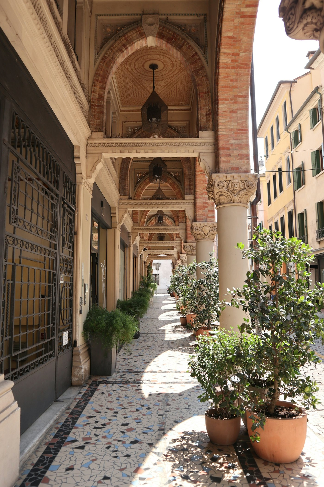
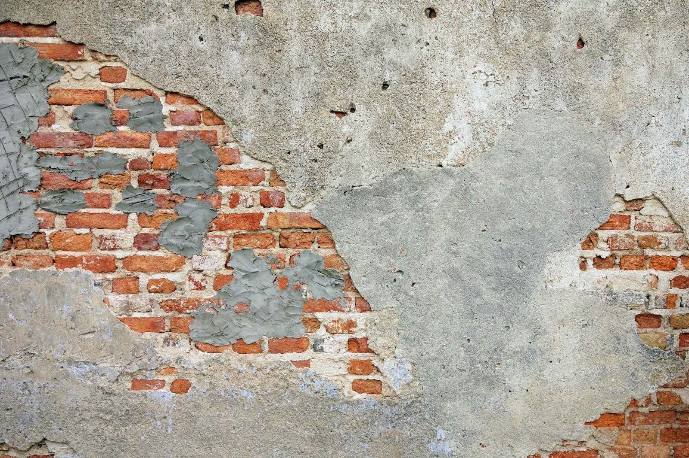
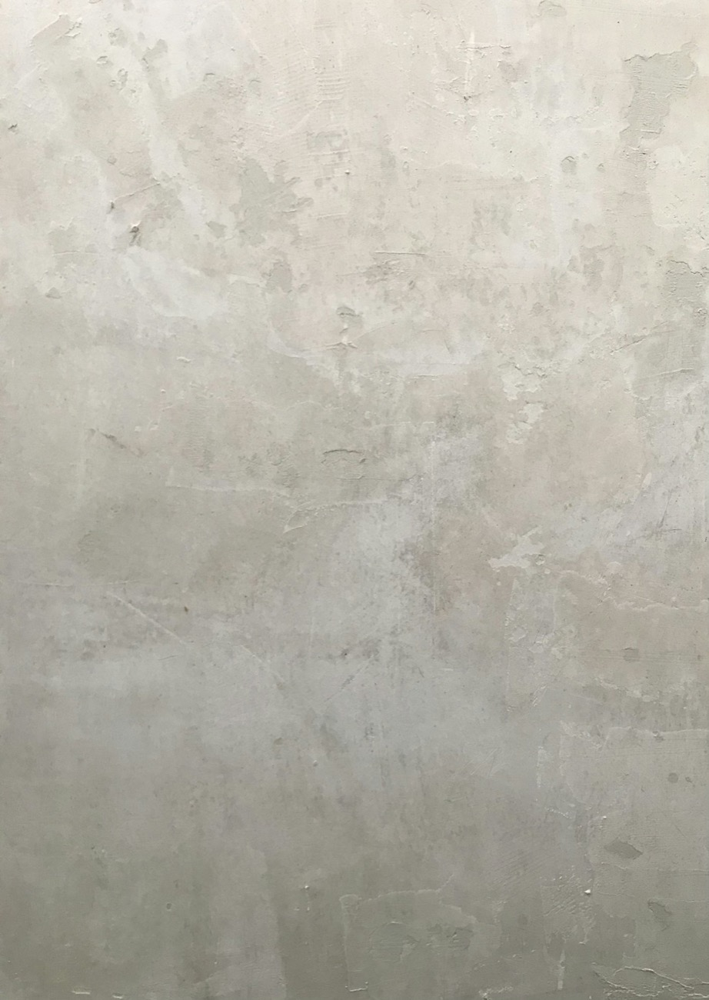
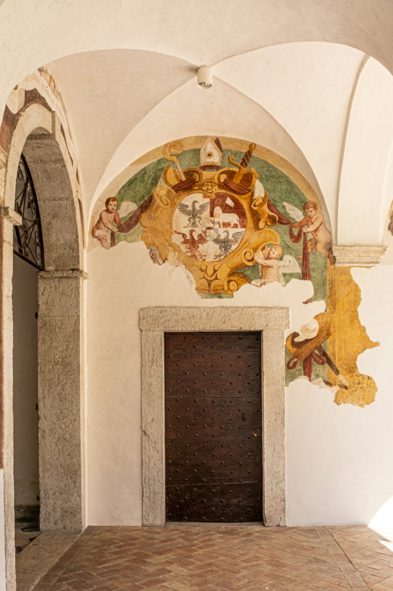
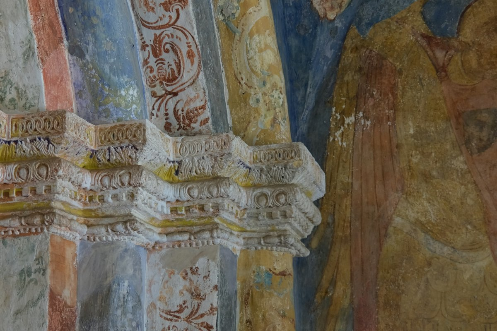
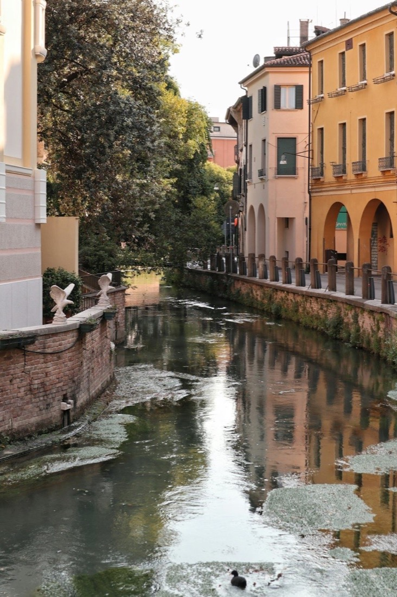

Antichi Restauri di Sergio Morandin
Restauro conservativo a Treviso.
Ristrutturazioni e restauri edili: muri, intonaci a calce, marmorino. Si conserva quello che merita di restare.
- TitolareSergio Morandin
- LavoriRestauro e ristrutturazioni
- Google5,0 · 2 recensioni
- SedeCorso del Popolo, Treviso
Lavori
Mettere mano a una casa vecchia, senza cancellarla.
Un edificio antico ha materiali e misure che non si rifanno uguali. Il lavoro è capire cosa si può salvare, e rifare il resto con gli stessi materiali.
-
01
Restauro conservativo
Muri, volte e superfici di edifici storici: si consolida e si ripara quello che c'è, invece di demolire e rifare.
-
02
Ristrutturazioni edili
Case e appartamenti da rimettere a posto, dentro e fuori, con un occhio a quello che dell'originale vale la pena tenere.
-
03
Intonaci a calce e marmorino
Intonaci traspiranti per i muri vecchi e finiture a marmorino, stese a mano a spatola, strato dopo strato.
Strato dopo strato
Un intonaco a calce si fa così.
- 00Il muro com'èMattoni a vista, intonaco staccato.
- 01Pulizia e consolidamentoVia le parti che non tengono più.
- 02RinzaffoIl primo strato, ruvido, che aggrappa.
- 03ArriccioIl corpo dell'intonaco, tirato a piano.
- 04MarmorinoLa finitura a spatola, liscia e opaca.


00 Il muro com'è
Il mestiere
Affreschi, volte, portici, facciate.
Foto illustrative. Qui vanno le foto dei vostri cantieri.




Chi sono
Sergio Morandin, restauratore a Treviso.
Antichi Restauri è la ditta di Sergio Morandin. Il nome dice già il lavoro: case e muri antichi, da ristrutturare con rispetto per come sono stati costruiti.
Per un sopralluogo o un preventivo si parla direttamente con Sergio, al 340 348 1060 o su WhatsApp.
Professionista, bravo.
Mattia Moretto, recensione su Google
Come si lavora
Prima si guarda il muro. Poi si decide.
- 01
Una telefonata
Due parole su cosa c'è da fare e dove si trova la casa.
- 02
Il sopralluogo
Si guarda il muro da vicino: umidità, crepe, intonaci che tengono e quelli che no.
- 03
Il preventivo
Cosa si conserva, cosa si rifà, con quali materiali.
- 04
Il lavoro
Strato dopo strato, con i tempi che la calce chiede.
Contatti
Raccontate a Sergio la vostra casa.
- Telefono e WhatsApp340 348 1060
- SedeCorso del Popolo, 31010 Treviso
Corso del Popolo, TrevisoApri in Google Maps